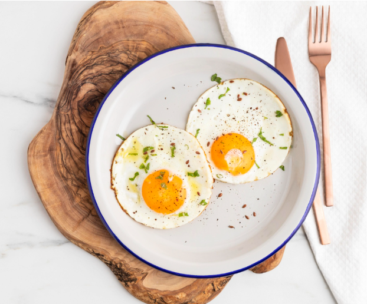

Membuat Unordered List

Bahan-bahan Memasak Telur Goreng
- Telur 3 butir
- Margarin (1 sdm)
- Batang Daun Bawang
- Bawang Merah (2 butir)
- Cabai Merah Keriting(2 buah)
- Lada 1/4 sdt
- Garam 1/4 sdt
Membuat Ordered List
Cara Memasak Telor Goreng
- Campur semua bahan diatas
- Kocok semua bahan hingga merata
- Panaskan margarin
- Goreng dan dadar hingga kuning keemasan (matang)
- Selesai dan masakan di hidangkan